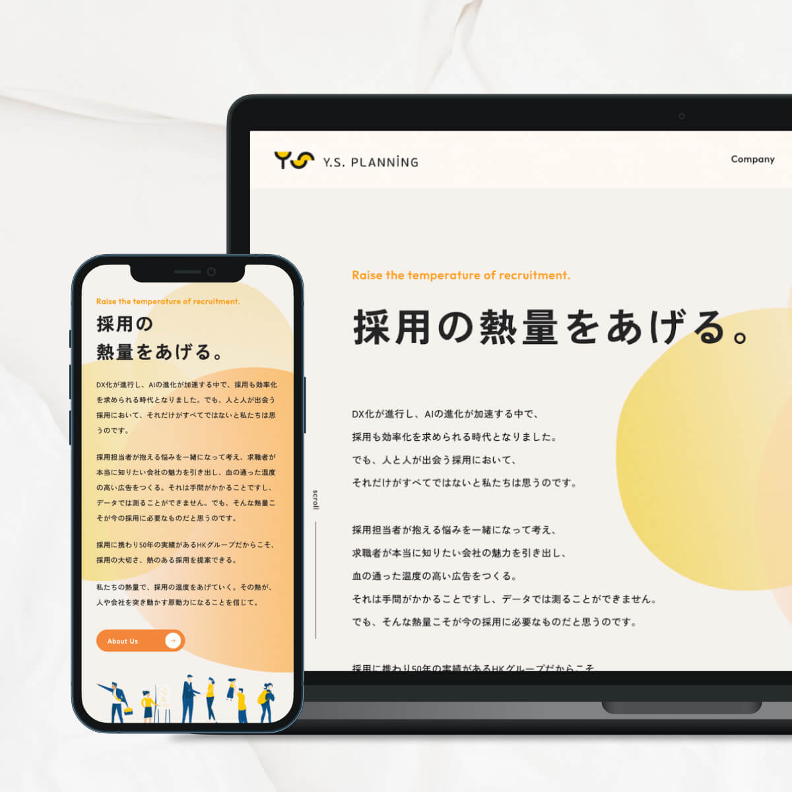
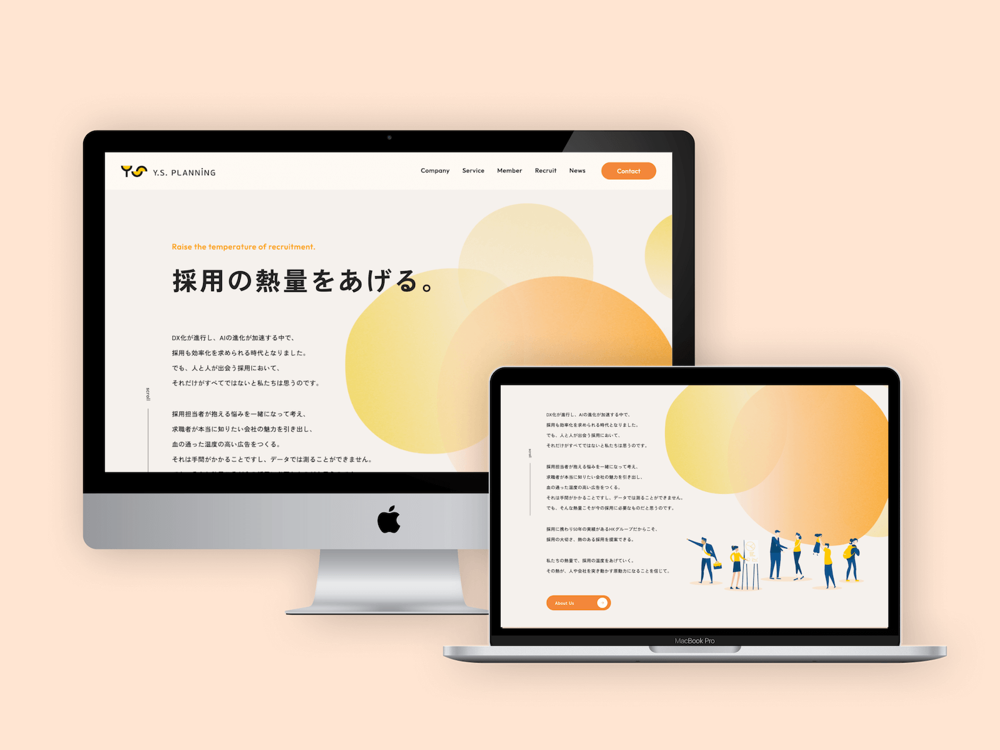
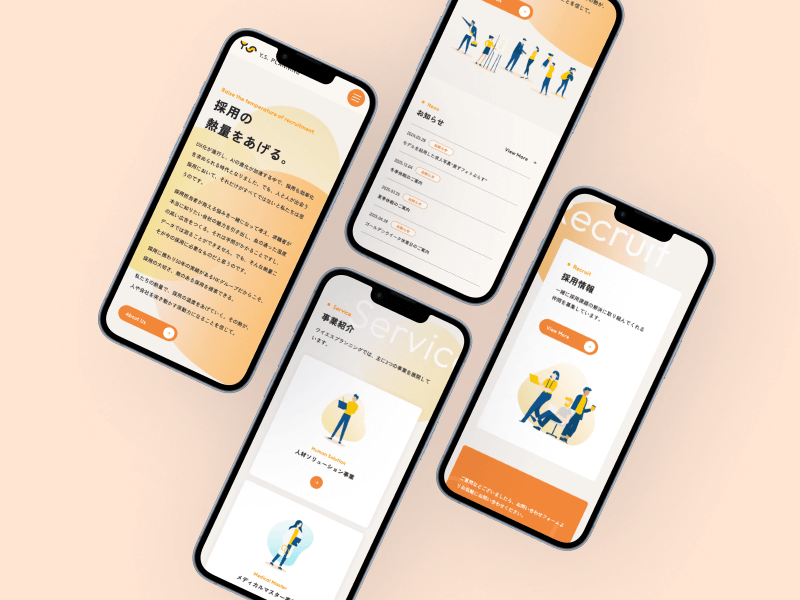
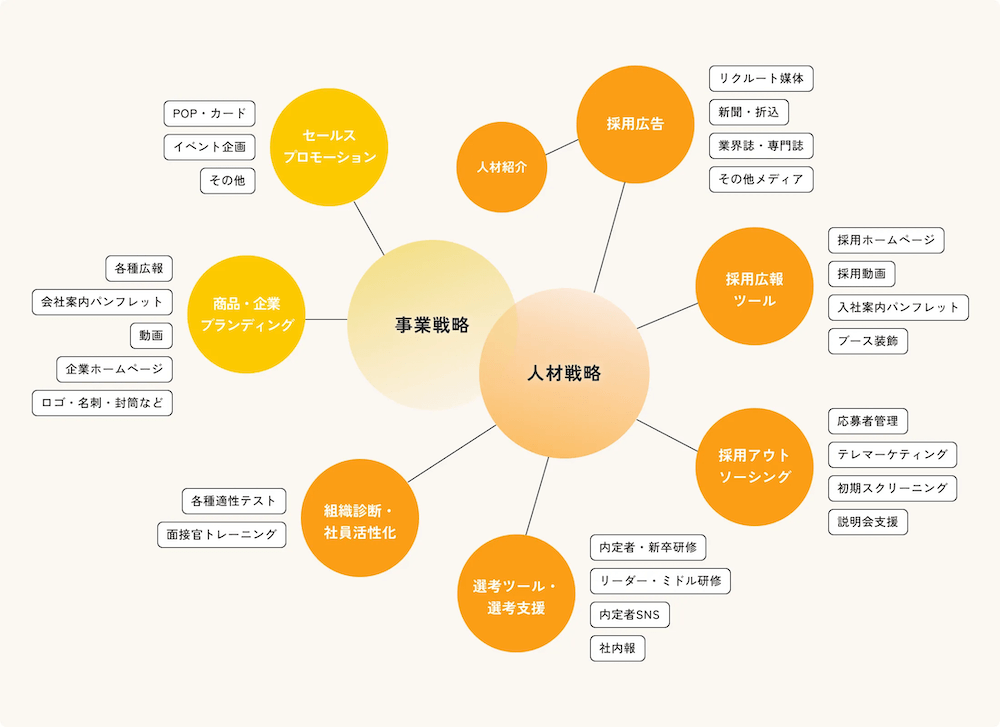

✴︎ 背景と課題
背景
既存サイトは定期的に情報追加されていたものの、整理されないまま運用されており、 サイト内の導線が複雑化していました。
課題
- 掲載情報が整理されておらず、必要な情報に辿り着きにくい
- デザインが古く、レスポンシブ未対応
- クライアント自身が更新しづらい構造
→ クライアント側の運用負荷が高い状態が課題だと判断しました。
✴︎ 設計方針
1. 情報整理を前提とした構造設計
- 情報を「用途・目的別」に整理
- ページ構成・導線をシンプルに再設計
2. WordPress運用を前提としたデザイン
- クライアント側で文字・画像を差し替えても崩れないことを最優先
- コンポーネント単位でデザインを設計し、どのページでも自然に成立するUIを目指しました
✴︎ デザイン
ビジュアルトーン
トップページのキャッチコピー「採用の熱量をあげる」に合わせて、
- 黄色やオレンジを基調とした配色
- 徐々に“温度が上がっていく”印象を与えるような、堅すぎず温かみのある企業イメージを表現しました


UI設計
- コンポーネントを意識したレイアウト設計
- 誰が触っても一定の見た目を保てる構造
イラスト制作

✴︎ 実装
- レスポンシブ対応
- WordPressへの組み込み
- 投稿機能の実装
- お問い合わせフォームの実装
✴︎ 振り返り
運用を前提とした設計により、クライアントが自身で運用できるサイト構造を実現できました。